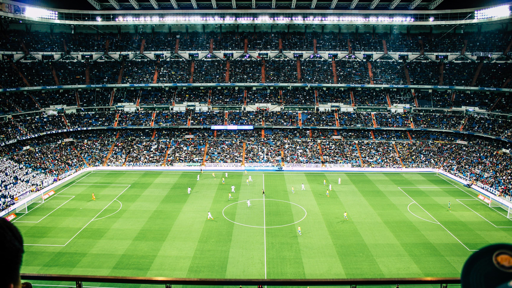

森保ジャパン、W杯イヤー初陣を白星で飾る
——伊東純也の決勝弾でスコットランドを
1-0撃破、4連勝

FIFAランキング19位の日本はランキング38位のスコットランドのホーム・ハムデン・パークに乗り込み、アウェーでの難しい一戦に挑みました。北中米W杯の開幕まで3カ月を切ったなか、最終メンバー発表前ラストの実戦となる今シリーズは、選手たちにとって代表残留をかけた重要な「査定」の場でもありました。
先発には負傷から1年ぶりに復帰した伊藤洋輝（バイエルン・ミュンヘン）や、セルティックでプレーする前田大然がキャプテンマークを巻いてピッチに立ちました。また、イタリア1部のパルマでプレーするGK鈴木彩艶も負傷明けの復帰戦を迎え、早速その存在感を示します。
前半8分、スコットランドのマクトミネイ（ナポリ）に至近距離からシュートを放たれる最大のピンチを迎えますが、鈴木彩艶が左手一本で弾き出す神セーブ。後半にも55分のロバートソンの突破から放たれたシュートをファインセーブで防ぐなど、クリーンシートの立役者となりました。
🥅 得点：84分 伊東純也（三笘→鈴木淳之介のクロスから）
🧤 MOM候補：鈴木彩艶（ビッグセーブ連発でゴールを死守）
🔄 交代策：後半17分・62分の計8枚替えで終盤に主力を投入
📊 連勝：昨年10月ブラジル戦から4連勝達成
🏆 次戦：3月31日（日本時間4/1）vs イングランド代表（ウェンブリー）
試合が動いたのは後半84分。左サイドで三笘薫が縦パスを通すと、鈴木淳之介（コペンハーゲン）がボックス内へ駆け上がってグラウンダーのクロス。中央で塩貝健人（ウォルフスブルク）がフリックすると、最後は途中出場の伊東純也が冷静に右足で流し込みました。62分に投入されてから、一貫してスペースに飛び出しリズムを作り続けた伊東の、まさに「らしい」決勝ゴールでした。
森保監督は今試合で交代枠を異例の11人フル行使し、選手選考とチームの底上げを同時に進める方針を明確にしました。前半は先発組が組織的なプレスで主導権を握り、後半は主力組が投入されてから厚みのある攻撃を仕掛けるという、二段構えの戦い方が機能しました。
次戦は現地3月31日（日本時間4月1日）、FIFAランキング4位のイングランド代表とウェンブリー・スタジアムで対戦します。W杯グループステージではオランダ・チュニジアなど強豪と対戦する日本代表にとって、世界屈指の強敵との一戦はW杯本番さながらの最終確認になります。スコットランド戦の勢いを引き継ぎ、さらなる好パフォーマンスが期待されます。